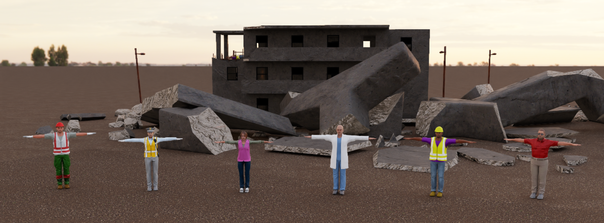
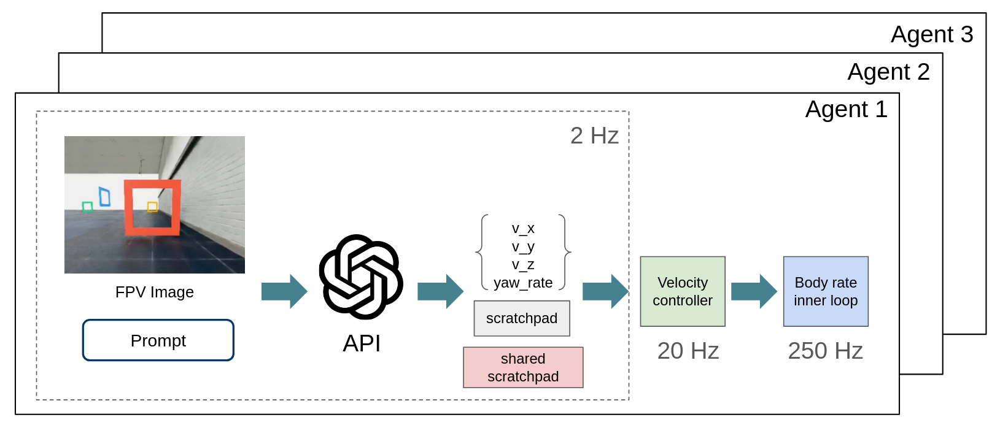
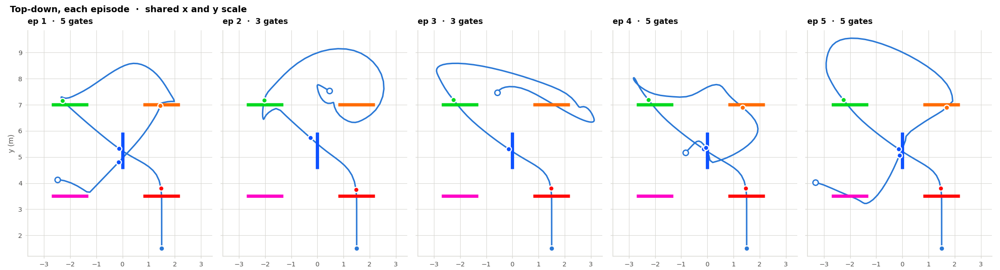

GPT-6 Astra as a Drone Pilot
By Vineet Pasumarti and Antonio Loquercio
We have all seen GPT-6 Astra's impressive capabilities in the last few weeks: controlling a real car, doing some basic pick-and-place, and performing other manipulation tasks that require some level of spatial understanding. Since our group mostly works on aerial robotics, we decided to ask the following question: Can GPT-6 Astra directly control a drone solely from a first-person view image (akin to human pilots)?
The short answer to this question is NO. With a 5-6s round-trip latency to receive a command, the drone can only fly at very low speeds. For example, if you fly at a constant 1 m/s (the average human walking speed), a 5s latency means the drone will be blind for 5 m. A crash is guaranteed if some obstacle appears in this window. While you can address this problem by having the drone fly slower, at some point you’ll be limited by battery life: there is only so much space you can cover before the battery runs out if you move at 0.1 m/s. So, even forgetting about the fact that you can’t run Astra onboard and you’re dependent on a link to the internet, latency stops you from doing anything interesting. While you can pay 6X more for the ultra-fast mode, we observed a 2s latency in the best case.
The long answer to the question of whether Astra can control a drone, however, is much more nuanced. This is what this blog post is about.
Let’s forget about latency
Let’s change the question slightly to: Could Astra control a drone solely from a first-person view image, if latency were not a problem?
To answer this question, we perform our tests in simulation, which gives us full control over latency. Our control architecture is depicted in Fig. 1. Astra takes as input the first-person view image, a prompt describing the task at a high level (prompts are provided at the end of this post). It uses this information to output a velocity command in the levelled camera frame (vx, vy, vz) and a yaw rate, plus some information in the scratchpad (we do not give any directive for what information should go there). Every input, predicted command, and scratchpad is appended to the context.

We block the simulation until we receive the answer (so latency is zero). The input and control update frequencies are 2Hz, and the velocity is kept constant until a new command is received. We use an off-the-shelf velocity controller[2] to track the desired speed and yaw.
Note that this control hierarchy requires a state estimation system to track the desired commands. An expert human pilot can do without (more on this later). However, this choice allows us to understand Astra's spatial capabilities without incurring exorbitant costs. For a similar economic reason, we use low reasoning on all our queries.
We evaluate this approach on 3 object search tasks:
- Finding a broken window on the exterior of a building.
- Finding a rusted pillar on a bridge.
- Finding a human in a collapsed building.
It is worth noting that existing methods for accomplishing such tasks are quite complex. They require the orchestration of multiple components, such as object detection, 3D mapping, exploration routines, and obstacle-avoidance modules. For a recent and quite impressive real-world example, please check out this work [1].
Experimental Setup
A task is completed if the agent gets within 1m of the target object and issues a Complete command. It has up to 2 minutes to finish the task, and it cannot see the target object from its initial location. We impose a speed limit of |vx| < 5 m/s, |vy| < 1.5 m/s, |vz| < 1 m/s, and |yaw rate| < X. These numbers are chosen somewhat arbitrarily, taking into account the 2Hz update rate and the fact that the camera is pointing forward.
We built the simulation environments by modifying open-source 3D assets that we found online. The agent must complete the task in a single episode. It does not have access to the environment beforehand, nor to its 3D CAD or any other information about it. To make our best effort to avoid information leakage, we only use Claude Code to help us with coding and environment creation.
In all the visualizations below, you will see a few telemetry metrics, such as the desired speed and the distance to the target. This information is not passed to the agent but is only added in post-processing to help us understand what is happening. Another small detail to look for is an orange circle in the top-right corner of the image. Only if a frame had that identifier was it seen by Astra, used to issue a command, and added to the context.
Finding a broken window on the exterior of a building
Result: Success.
Time to completion: 34 seconds.
Cost: ~$1.52.
Finding a rusted pillar on a bridge
To make this task a little spicier, we made the bridge perfectly symmetrical and initialized the agent in the center. However, we gave it a little more semantic information: in the prompt, we say that the sun is setting in the west and the rusted pillar was on the east side of the bridge.
Result: Success.
Time to completion: 16 seconds.
Cost: ~$0.50.
Interestingly, the robot goes directly to the correct side of the bridge. Inspecting the scratchpad explains why. It does so by recognizing that the right-hand side of the image is brighter than the left-hand side. Therefore, the sun must be setting on the right, and the rusted pillar is on the left. We know this because the agent explicitly says so in the scratchpad.
Finding a human in a collapsed building
Result: Success.
Time to completion: 24 seconds.
Cost: ~$0.88.
The strategy selected for exploration is quite interesting: start by circling the building from a distance until something is seen, then reach the target upon detection. Since the building is half-collapsed and the agent has no prior knowledge of where the human might be, it makes sense to start with this approach rather than directly entering the lower part of the building to minimize the total time required to cover the entire search area.
But what about spatial memory?
A limitation of the results presented above is that they only test a relatively shallow form of spatial understanding. It could be that Astra is just a good 2D detection system and happened to have the target object in view at some point. No 3D understanding of the environment is required for success. To probe this hypothesis, we slightly change the task formulation.
We divide the navigation task into two stages. In the first stage (exploration), the agent has 2 minutes to explore the environment and locate any istance of objects of interest (injured humans). In the second stage (search), the agent has to reach a specific human as quickly as possible.
In the exploration stage, the agent has no information about how many humans are present in the building or where they are located. This task is inspired by experiments in behavioral science used to evaluate spatial learning in children [3], and commonly used to benchmark autonomous navigation agents. Being successful requires exploration and spatial memory of the environment.
We perform the test as follows. We place 6 humans in a three-story building, with two humans per floor. All humans have distinctive features (see Fig. 2). In the search phase, we ask the agent to find the person with the red t-shirt.

To make things a little faster (and save some $), we increase the lateral and vertical speed limits to |vy| < 5 m/s and |vz| < 5 m/s.
Exploration Stage
Time to completion: 47 seconds.
Cost: ~$2.69.
The agent has found all humans. However, in tight spaces, it sometimes collides with obstacles. A closer look at the few occasions when this happens suggests it is due to slight errors in predicting the drone’s trajectory relative to obstacles in the 0.5 seconds when the velocity command is held fixed (see, for example, 0:38).
This indicates that Astra might not have been trained on the dynamics of drones, and/or it still makes small mistakes in estimating its relative positions to obstacles. Or it could simply be that it does not care much about avoiding collisions, since this is a simulator (nothing in the prompt asks it to avoid collisions at all costs). However, we suspect that simply increasing inference speed or improving the prompt could be a highly effective solution to this problem (we’ll come back to this later).
Search Stage
Result: Success.
Time to completion: 12 seconds.
Cost: ~$1.40.
It is worth noting that Astra does not take the shortest path to the target (it could have passed through the window) but instead follows the same route it used during exploration. This might indicate a relatively poor 3D understanding of the environment. In the next section, we probe this hypothesis further.
Multi-Agent Collaborative Search
To further probe how Astra represents the environment, we conducted a multi-agent exploration and search experiment. Specifically, we spawn three agents at random locations on the map, each controlled by a different instance of Astra.

Every agent observes its own history of frames, and can read and write to a shared scratchpad used for coordination (Fig 3). We use exactly the same exploration and search task as above, but modify the target human to be the policeman in the orange vest. The agents are instructed to finish both phases as fast as possible through collaboration.
Exploration Stage
Time to completion: 33 seconds (approximately the same for all agents).
Cost: ~$4.68.
As expected, “swarming” the building results in faster exploration. This is because the agents explore different but overlapping parts of the building. For example, Agent 1 is the only one to explore the first floor, and shares what it observes in the communal scratchpad.
We make a few suprising finding by inspecting the shared scratchpad. First, we observe that agents share information about where they locate humans in relation to landmarks (e.g., doors or windows). Second, they can correctly identify their fellow agents, despite the fact that they are all visually identical (Fig. 4). For example, Agent 2 at 0:10 sees another drone below itself and indicates seeing Agent 3 in its personal scratchpad. The most likely hypothesis is that Agent 2 does so by matching what it sees to what Agent 3 has reported in the shared scratchpad. This is quite impressive, as it indicates that Astra is capable of spatial perspective-taking [4].
Agent 3, 6.65s: "Found second human TOP floor inside nearest balcony door on long facade: red shirt, pale trousers, prone near central column. Inspecting."
Agent 2, 7.15s: "I entered upper broken corner past yellow/purple worker; proceeding straight inward toward red/white figure through rear doorway (may be your red shirt)."
Agent 3, 7.15s: "Top-floor human confirmed: RED short-sleeve shirt with black markings, light gray trousers, gray shoes; brown hair/beard male, arms spread by column. Access first tall balcony door nearest solid end wall."
Agent 3, 7.65s: "Agent2 red/white likely same red-shirt man I mapped; I will move along top floor toward far right end."Search Stage
Result: Success.
Time to completion: 10 seconds
(simulation is stopped after one agent issues a complete command).
Cost: ~$2.45.
The results of this experiment are very intriguing. Agent 3 is the first to reach the target, and does so in a very agile fashion (passing through a small window). Notably, Agent 3 did not explore the first floor in the exploration stage, so it relied completely on the information shared by Agent 1 (who was the only one to explore it) in the communal scratchpad.
Also, Agent 3 followed a different route than Agent 1 did when it first saw the target during the exploration phase. Agent 3 must have used the information provided by Agent 1 to find a shortcut to the target. These are quite advanced swarming techniques!
Are Such Spatial Capabilities Unique to Astra?
Were these spatial capabilities also present in earlier or weaker models, but nobody bothered to look for it? To answer this question, we evaluate a set of models on the task of vision-based drone racing. Specifically, we ask the agent to pass a set of waypoints (generally referred to as gates) in order. We give each gate a unique color for easy identification.
The results clearly show that prior models from the 5.6 family or cheaper concurrent models (Luna and Sol) struggle significantly with spatial reasoning, even in this simple waypoint navigation task. We even tried to give them 4 more episodes to see if they could learn in-context to solve the task, providing them with feedback after each episode on which gates they passed, how far they were from the center, and how many collisions they had. Sol improved a lot, but still failed to complete the task without collisions after 5 episodes. Luna did not improve as much, and always failed pretty badly. In contrast to all these models, Astra succeeded at the task in the first episode.
Particularly interesting is the fact that both Sol and Luna often recognize the next gate in the image, but struggle with altitude and orientation. This suggests that older models are very strong 2D detectors, but have poor 3D spatial understanding. In our prior work [5], we evaluated older models from the Gemini family and a few open-source models in navigation tasks and found similar results. It seems that something was done in Astra that bestowed it with such 3D spatial reasoning.
Flying like a human pilot: Learning Low-Level Control
The prior experiments mostly test Astra’s kinematic understanding of the robot. The dynamics were offloaded onto the low-level velocity-tracking controller. In this section, we study whether Astra can learn to control the drone's underactuated dynamics through trial and error. Specifically, we ask Astra to predict the drone’s orientation (attitude) and the net upward force (thrust) in the body frame. This is a control level commonly used by human pilots, and generally referred to as ATTI mode. Controlling the dynamics requires lower latency, so we increase Astra’s control frequency to 10Hz (Fig. 4).

Beyond being scientifically interesting, this capability is also important from a practical standpoint, as it enables flying a drone without a state estimation system. This is very useful since, in our experience with vision-based drones in GPS-denied environments, state estimation is one of the weakest links and requires considerable engineering (ever wondered why the majority of drone research happens in Vicon-equipped flying arenas or outdoors, far away from obstacles?)
We perform this experiment on the drone racing task. Specifically, we give the agent 5 episodes to accomplish the task. Each episode is limited to 10s (to keep costs low), and all prior frames and actions are kept in the context. In the prompt, we describe the order in which the gates must be passed and that the robot should not collide with the gates. We do not provide any intermediate feedback between episodes; the agent must figure out what went wrong and how to correct it on its own.
Result: Failure.
Cost: ~$54.94.

We observe gradual improvements over the episodes. In the first episode, the agent passes a few gates but has very poor control and crashes repeatedly. This suggests that Astra was not trained on this task. However, from the second episode onwards, it gets better at maintaining its position and attitude, avoiding collisions, and keeping the next gate in view whenever possible.
In the last episode, it still experienced some collisions, and it is therefore fair to call this evaluation a failure. Despite the final trajectory being inferior to that of a vision-based policy trained specifically for the task [6], we arguably observe some trial-and-error learning and improvement. It is not unthinkable that it would succeed with a few more episodes (and $).
Summary and Conclusions
It is now time to return to the question we started with: Can GPT-6 Astra control a drone solely from a first-person view (akin to human pilots)? Our investigations show that if you assume latency is zero, it can successfully perform a wide range of tasks.
Qualitatively, its performance is comparable to or inferior to that of state-of-the-art systems specifically designed for each task. However, we performed each experiment only once with the first and simplest prompt that came to our mind, so our results are to be interpreted as a lower bound on performance. While a thorough quantitative comparison with the state of the art is outside the scope of this blog post, the simplicity and generality of using Astra to directly output control commands are undeniable.
The problem is, however, that in the real world, you can’t just assume latency to be zero. Computation takes time and energy. Making things worse, the latency (and cost) of transformer-based systems like Astra increases approximately in proportion to the square of the context length, which is arguably a serious problem for tasks lasting more than a few minutes.
Finally, if you plan to address the prior issues by having the robot move very slowly and throwing as much money at the problem as needed, the system would still have a single point of failure: its connection to the internet to call the model. This creates a lot of non-trivial issues, ranging from privacy concerns to safety issues (jamming an internet connection isn’t too hard) and bandwidth limitations.
Will addressing these limitations require a completely different approach, or just finding a way to reduce latency and run the model onboard? With the information that we have today, we can’t really say. But the fact that we finally have decent end-to-end robot control capabilities from a VLM should push us to think more deeply about how to select research directions. We’re not in Kansas anymore.
References
- FARM: Find Anything using Relational Spatial Memory
- RotorPy: A Python-based Multirotor Simulator with Aerodynamics for Education and Research
- Latent Learning
- Embodied and disembodied cognition: Spatial perspective-taking
- End-to-End Navigation with Vision Language Models: Transforming Spatial Reasoning into Question-Answering
- Dream to Fly: Model-Based Reinforcement Learning for Vision-Based Drone Flight
Prompts
Finding a broken window on the exterior of a building
You are controlling an fpv drone to conduct an inspection in a simulated factory environment. Your task is to inspect the exterior of the factory building to identify a broken window. Your action output is a 4 dim velocity vector: vx = forward speed in m/s, along where the camera points, levelled to horizontal; vy = sideways speed in m/s, positive is left; vz = vertical speed in m/s, positive is climb; yaw_rate_deg_s = turn rate in deg/s, positive turns left. Each reply also carries a status: Searching while you are still working on the task, Complete once it is done, which ends the run. Please find the broken window. If it exists, keep it in frame and hover within one meter of it before outputting 'Complete'.Finding a rusted pillar on a bridge
You are controlling an fpv drone to conduct an inspection in a simulated bridge environment. Note that the west side of the bridge points towards the setting sun. Your task is to inspect the east pylon for a rusted cross member. Your action output is a 4 dim velocity vector: vx = forward speed in m/s, along where the camera points, levelled to horizontal; vy = sideways speed in m/s, positive is left; vz = vertical speed in m/s, positive is climb; yaw_rate_deg_s = turn rate in deg/s, positive turns left. Each reply also carries a status: Searching while you are still working on the task, Complete once it is done, which ends the run. Please find the rusted cross member. If it exists, keep it in frame and hover within one meter of it before outputting 'Complete'.Finding a human in a collapsed building
You are controlling an fpv drone to conduct a search in a simulated earthquake environment. Your task is to search the damaged building to find an injured human. Your action output is a 4 dim velocity vector: vx = forward speed in m/s, along where the camera points, levelled to horizontal; vy = sideways speed in m/s, positive is left; vz = vertical speed in m/s, positive is climb; yaw_rate_deg_s = turn rate in deg/s, positive turns left. Each reply also carries a status: Searching while you are still working on the task, Complete once it is done, which ends the run. Please find the injured human. If the human exists, keep them in frame and hover within one meter of them before outputting 'Complete'.Single Agent Exploration
You are controlling an fpv drone to conduct a search in a simulated earthquake environment. You have two minutes to explore the damaged building and look for injured humans. After the two minute exploration phase, you will be reset into a new episode, and you will be prompted to find a specific human of interest based on their appearance. Your task is to locate that human as fast as possible. The drone is a small quadcopter with a 14 cm diagonal, and the camera is mounted on top near the center, facing forward. Your action output is a 4 dim velocity vector: vx = forward speed in m/s, along where the camera points, levelled to horizontal; vy = sideways speed in m/s, positive is left; vz = vertical speed in m/s, positive is climb; yaw_rate_deg_s = turn rate in deg/s, positive turns left. Each reply also carries a status: Searching while you are still working on the task, Complete once it is done, which ends the run. You may output 'Complete' during the exploration phase to end it early. If the target human exists, keep them in frame and hover within one meter of them before outputting 'Complete'.Single Agent Search
You have been reset to the start of a new episode. Find this human of interest: a man in a red short-sleeved shirt and beige trousers, wearing sunglasses. Locate them as fast as possible; you have 15 seconds.Multi-Agent Exploration
You are controlling one of 3 fpv drones conducting a search in a simulated earthquake environment. You are agent 1; the agents are numbered 1 to 3. Your team must explore the damaged building and look for injured humans as quickly as possible. The exploration phase ends after one minute and every drone will be reset into a new episode, where you will be prompted to find a specific human of interest based on their appearance. Your team's task is to locate that human as fast as possible. The drone is a small quadcopter with a 14 cm diagonal, and the camera is mounted on top near the center, facing forward. The other drones are also gpt-6-astra agents, and you may see them in your camera view. They are solid, so you can collide with them. The other agents do not see your camera view or your own scratchpad: the only way to share what you find is the shared scratchpad, which every agent can write to and every agent is shown each turn, each message labelled with the id of the agent that wrote it. Your action output is a 4 dim velocity vector: vx = forward speed in m/s, along where the camera points, levelled to horizontal; vy = sideways speed in m/s, positive is left; vz = vertical speed in m/s, positive is climb; yaw_rate_deg_s = turn rate in deg/s, positive turns left. Each reply also carries a status: Searching while you are still working on the task, Complete once it is done, which ends the run. You may output 'Complete' during the exploration phase to end your own exploration early; the phase ends when every agent has done so or the minute is up. In the search phase, the first 'Complete' from any agent ends the search for the whole team and is judged at that agent's position. If the target human exists, keep them in frame and hover within one meter of them before outputting 'Complete'.Multi-Agent Search
You have been reset to the start of a new episode. Find this human of interest: a police officer in a light blue long-sleeved uniform shirt, an orange hi-vis vest, white gloves, light grey trousers and a grey peaked cap. Locate them as fast as possible; you have 15 secondsAre Such Spatial Capabilities Unique to Astra?
You are controlling an fpv drone in a real-time simulated drone racing track. Please fly through the gates of this figure 8 track. The order of gates is RED -> BLUE -> GREEN -> ORANGE -> BLUE -> MAGENTA -> repeat. Your action output is a 4 dim velocity vector: vx = forward speed in m/s, along where the camera points, levelled to horizontal; vy = sideways speed in m/s, positive is left; vz = vertical speed in m/s, positive is climb; yaw_rate_deg_s = turn rate in deg/s, positive turns left. The run ends after 30 seconds. You get 5 attempts at this track. After each attempt you are told how it went and respawned at the start; everything from your earlier attempts stays in this conversation, so use it to fly better the next time.Learning Low-Level Control
You are controlling an fpv drone in a simulated drone racing track where real-time latency is not a concern. Please fly through the gates of this figure 8 track as well as possible, i.e., quickly and avoiding collisions. The order of gates is RED -> BLUE -> GREEN -> ORANGE -> BLUE -> MAGENTA -> repeat. Your action output is a 4 dim attitude command: thrust = collective thrust as a multiple of hover thrust, 1.0 holds altitude when level; roll_deg = bank angle in degrees, positive banks right; pitch_deg = pitch angle in degrees, positive tilts the nose down and accelerates forward; yaw_deg = heading change in degrees from where you face now, positive turns left. Each attempt ends after 10 seconds. You have a maximum of 5 attempts to do as best as you can